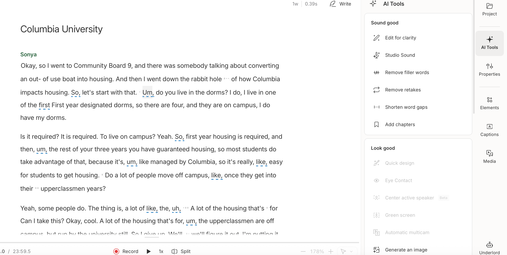

Podcasts are a very popular media entertainment format.
Yet, speech errors are common.
If you want to preserve the humanness of your talk show,
Descript can help edit out mistakes without making the subject sound too robotic.
Not an artificial voice, just you.
ARTifical does not advocate for creating a podcast entirely with Ai
(generated script, voices, people, etc).
To Edit Your Audio:
◼ Convert the file using the “transcribe” tool.
◼ Descript will generate a script of your podcast.
◼ Edit out filler words with one click, or edit out clips you decide that you no longer need.
◼ Add pauses to make sentences sound less rushed, especially if it’s the result of editing.
The transcript itself is a great tool for accessibility concerns and can be linked in the description of a podcast.
Remember:
Remember:
If combined with video, the Ai will automatically create jump-cuts if
filler words or mistakes are edited out via transcription.
Like the other tools described, it takes a talented editor to make transitions seamless and natural.
Use your judgement to decide what to cut out.